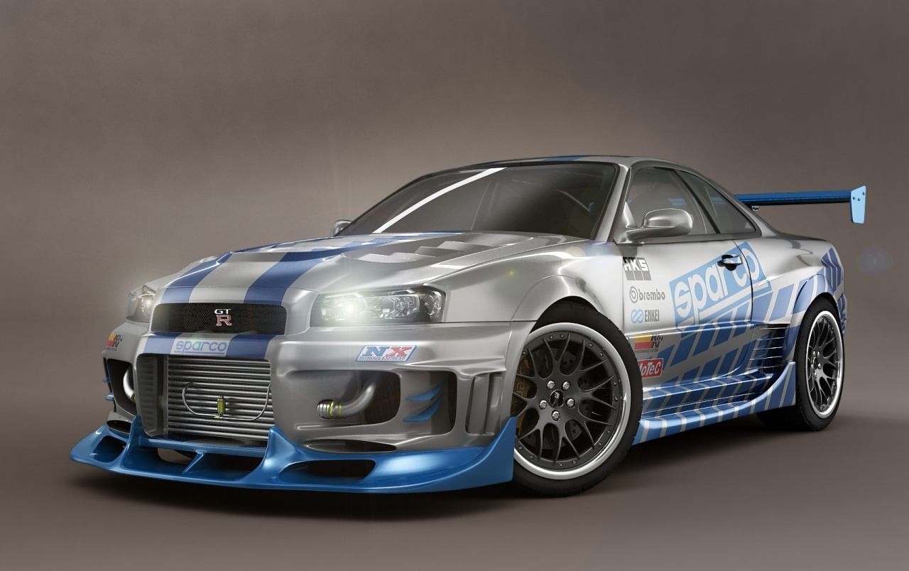

Renta De Autos

Nissan Skyline
El Nissan Skyline es un modelo de automóvil japonés que se ha producido en distintas versiones ininterrumpidamente desde 1957. Sería tras la fusión de los fabricantes Prince y Nissan, cuando comenzó a comercializarse con este nombre
Este es el enlace